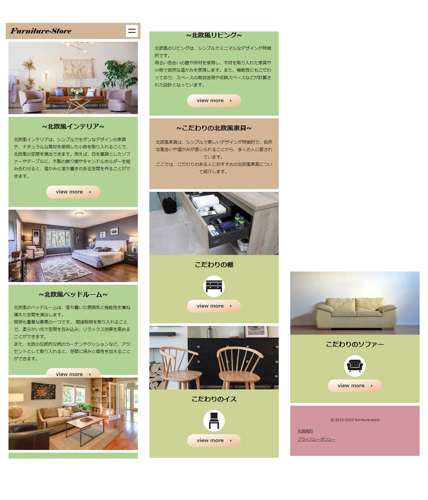

- 
レスポンシブ対応
レスポンシブ対応
全体期間:5日
Googleフォント(h1)
jquery.cookie.js(ローディングアニメーション)
ajax(ローディングアニメーション)
スクロールイベント
jquery.cookie.jsを使い、初回訪問の人にだけサイトを開いた時にローディングアニメーションが表示されるようにしました。
CSSでアニメーションさせています。
navはスクロール量を取得し、位置が固定されるようになっています。
プライバシーポリシーと利用規約ページもあり、中身はフリー素材のものを使用。
ハンバーガーメニューは自作
ブレイクポイントを、641px、768px、901px、960pxで設定
901px未満でハンバーガーメニューが、767px未満でレイアウト調整をし、コンテンツが縦に並ぶようにしています。
地味なポイントとしては、CDNが使えなかった場合に備え自サーバーのjqueryファイルを読み込んでいたり、
descriptionを入れていたりする。
(北欧風の家具やインテリアを中心に、様々な物を取り扱っているECサイトです。あなた好みの家具が必ず見つかります。)
初めて、クッキーとローディングアニメーションを使ったサイト。ローディングアニメーションは早くても遅くてもダメだと思った。
遅すぎるとイラっとしそうだし、早過ぎたらなにかわからない。
そしてせっかく作ったものを没にするというのはクるものがある。webに限らず没になって悲しい思いをする人はたくさんいるんだろうなぁ